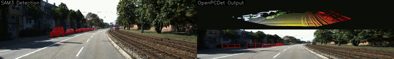
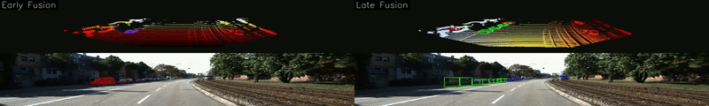

Introduction
Autonomous vehicles depend on multimodal sensing to achieve accurate environmental perception. Among these modalities, cameras provide detailed appearance information, whereas LiDAR delivers precise depth and geometric structure. Fusing data from these sensors enables a more reliable and comprehensive understanding of the surrounding environment by leveraging their complementary capabilities.
Video for SAM3 detection and PV-RCNN only

Camera-based perception degrades significantly under challenging conditions such as low-light or nighttime environments, glare, shadows, snow, and dust, which directly reduces segmentation accuracy and reliability. Moreover, when extracting LiDAR points corresponding to segmented vehicles, the sparsity of the point cloud makes it difficult to reliably infer vehicle orientation using LiDAR alone. In 3D point cloud–based detection, false positives occur frequently; while the method can often estimate object orientation accurately, it tends to misclassify or merge targets when multiple objects are spatially close.
Why fuse RGB and LiDAR info?
In this project, we compare two sensor fusion strategies — early fusion and late fusion — for 3D object detection. Using the KITTI dataset, SAM3 (2D image segmentation model) and PV-RCNN (3D object detection model) are used to evaluate each approach.
Early Fusion
Early fusion combines raw or low-level features from different sensors at the beginning of the detection pipeline. In this project, the pipeline for early fusion is:
- Get the masks of each target features by passing the prompts and images to SAM3
- Project the LiDAR points into the image frame
- Find all the LiDAR points in each masks
- Use these points to do object tracking by comparing the IoU of objects across timesteps, and estimate object pose
Late Fusion
Late fusion keeps sensor processing streams separate and combines their high-level outputs. In this project, the pipeline for late fusion is:
- Get the masks of each target features by passing the prompts and images to SAM3
- Use PV-RCNN to get 3D detections from LiDAR pointcloud
- Combine detections using IoU matching
Video for Early Fusion and Late Fusion

In early fusion, failures in camera-based perception propagate directly to the fused representation: if the camera does not detect distant pedestrians or cyclists, these objects are not marked even when corresponding LiDAR points are present. In contrast, late fusion combines high-level outputs from each modality, enabling the suppression of false detections by discarding LiDAR-based detections with low confidence scores and no associated segmentation masks, thereby improving overall detection accuracy.
Additionally, because PV-RCNN is not trained to recognize certain object categories such as trains, it fails to detect them using LiDAR alone. However, by integrating camera-based segmentation with LiDAR point clouds in a late-fusion framework, such previously unseen objects can still be successfully identified.
Next steps
Dive into BEVFusion and explore how encoding LiDAR points into voxel space and combining them with image-encoder features can form a joint feature space that supports semantic masks, 3D pointcloud detection, and even end-to-end trajectory planning.
References
[1] Early vs. Late Camera-LiDAR Fusion in 3D Object Detection: A Performance Study